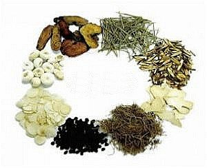

Viêm xoang
Viêm xoang là một trong những căn bệnh phổ biến hiện nay. Nếu không được nhận biết và chữa trị kịp thời sẽ ảnh hưởng lớn đến sức khỏe. Hiện nay, có nhiều phương pháp điều trị viêm xoang, trong đó thuốc viêm xoang đông y cũng được nhiều người nhắc đến. Vậy chữa viêm xoang bằng đông y có thực sự hiệu quả?
1. Viêm xoang là gì?
Theo Y Học Cổ Truyền, nguyên nhân gây viêm xoang là do cơ địa dị ứng nhiễm khuẩn (huyết nhiệt), dị ứng do lạnh (phế khí hư, vệ khí hư) gặp phải các tác nhân phong hàn, phong nhiệt, nhiệt độc mà gây bệnh.
Việc chữa viêm xoang bằng đông y đang được đánh giá cao, khắc phục đến đúng các chứng trong xoang như Tỵ Lậu, Tỵ Uyên, Não Lậu. Các bác sĩ hướng đến việc cân bằng âm dương trong cơ thể, thông kinh hoạt lạc, giải độc, tiêm viêm,.. để khắc phục tình trạng bệnh.
2. Biến chứng viêm xoang
Viêm xoang là bệnh lý khá phổ biến ở mọi đối tượng, tuy nhiên việc phát hiện và điều trị sớm không được chú trọng. Điều trị viêm xoang muộn ảnh hưởng nhiều đến sức khỏe cũng như chất lượng cuộc sống.
2.1. Biến chứng ổ mắt
Ở gần hốc mắt là xoang hàm, phía trên là xoang trán, bên trong là xoang sàng và xoang bướm. Quá trình viêm nhiễm lan rộng theo đường mạch máu qua hốc mắt gây ra biến chứng:
+ Viêm phù nề mi: Mí mắt sưng, gây đau nhức, thị lực vẫn rõ ràng.
+ Áp xe mí mắt: Có hiện tượng đau, sưng, nóng đỏ. Đây là biến chứng nguy hiểm nhất. Gây phù nề kết mạc, liệt vận nhãn hoàn toàn, suy giảm thị lực.
+ Nhiễm trùng mắt: Suy giảm thị lực hoặc mù vĩnh viễn.
2.2. Biến chứng nội sọ
Viêm màng não là một biến chứng thường gặp do tình trạng xoang trán và xoang bướm, gây ra biểu hiện như đau đầu, sợ ánh sáng, mờ mắt,..
+ Tình trạng nhiễm trùng não: Có triệu chứng co giật, tổn thương não. Nếu nhiễm trùng lan ra các mô có thể dẫn đến nguy cơ tử vong.
+ Tình trạng áp xe não: Do viêm xoang trán gây áp xe đại não, áp xe thùy trán
2.3. Một số biến chứng khác
+ Mất khứu giác hoàn toàn: Do bị tắc nghẽn mũi và viêm dây thần kinh nên mất khứu giác tạm thời hoặc vĩnh viễn.
+ Viêm tai giữa: Hay gặp ở trẻ em, do ống vòi tai trẻ ngắn, dễ khiến dịch mủ chảy vào. Nếu không điều trị kịp thời có thể gây điếc.
+ Viêm đường hô hấp dưới: Ho lâu ngày dẫn đến viêm phế quản, viêm thanh quản,..
Người bệnh không chữa viêm xoang bằng đông y hoặc tây y có thể gặp các biến chứng
3. Phương pháp điều trị viêm xoang bằng Đông Y
Trong Y Học Cổ Truyền, khi điều trị viêm xoang thường chú trọng vào hai nguyên nhân là Huyết và Vệ khí (yếu tố bảo vệ). Hiện nay, Đông y đưa ra rất nhiều phương pháp điều trị viêm xoang, có hai liệu pháp chính là dùng thuốc viêm xoang đông y và không dùng thuốc.
3.1. Phương pháp không dùng thuốc
3.1.1. Châm cứu
\hâm cứu sẽ làm giảm dần các triệu chứng như hắt hơi, chảy dịch mũi, giảm sưng nề. Tùy vào nguyên nhân mà các bác sĩ đưa ra phác đồ châm cứu khác nhau:
+ Thể phong hàn thấp phạm Phế: Tà khí phong hàn ở ngoài xâm nhập vào Phế thường do cảm mạo, suyễn chứng gây nên. Các huyệt: Ấn đường, nghinh hương
+ Thể phong nhiệt xâm nhập Phế: Có hiện tượng sốt, sợ phong hàn, họng sưng, khô miệng, rát miệng, đởm dính vàng. Các huyệt: Ấn đường, nghinh hương, hợp cốc, phong trì, phong môn, liệt khuyết.
+ Can đởm uất nhiệt: Biểu hiện thấp nhiệt, can đởm dịch tiết ra thất thường. Gây ra tình trạng bụng đầy trướng, khó chịu, rêu lưỡi vàng, đắng miệng, kén ăn, gây ẩm ướt và ngứa vùng sinh dục. Các huyệt: Phong trì, thượng tinh, ấn đường, thái xung, chiếu hải.
3.1.2. Cấy chỉ trong viêm xoang
Hiện nay, cấy chỉ đang là phương pháp điều trị tốt nhất trong Đông y. Đây là phương pháp cấy sợi chỉ tự tiêu vào các huyệt đạo để gây kích thích liên tục ở các huyệt.
Đoạn chỉ sau khi được đưa vào các huyệt đạo sẽ lập tức phát huy công dụng, tạo ra kích thích theo từng tiết đoạn thần kinh làm tăng lưu thông máu, giảm tình trạng viêm xoang. Đồng thời, sẽ kích thích thần kinh được tạo ra sau khi cấy chỉ còn giúp thông kinh hoạt lạc, ngăn chặn tình trạng viêm xoang, giảm các triệu chứng buốt vùng mũi, nghẹt mũi, chảy nước mũi.
Bác sĩ có thể chữa viêm xoang bằng đông y với phương pháp cấy chỉ
3.2. Phương pháp điều trị dùng thuốc viêm xoang đông y
Bên cạnh các phương pháp không dùng thuốc, việc phối hợp cùng các bài thuốc Y Học Cổ Truyền đem lại hiệu quả rất cao trong việc phòng và điều trị viêm xoang. Dưới đây là một số bài thuốc viêm xoang đông y. Lưu ý việc dùng thuốc nên có sự can thiệp và chỉ định từ các bác sĩ chuyên môn:
3.2.1. Bài thuốc Tiểu thanh long thang
Tiểu thanh long thang là một bài thuốc cổ phương nổi tiếng được nhắc đến lần đầu trong tác phẩm Thương Hàn Luận và Kim Quỹ Yếu Lược của Y gia Trương Trọng Cảnh. Tiểu thanh long thang điều trị cho chứng bên ngoài có “ngoại cảm phong hàn”, bên trong thủy thấp, đàm ẩm ứ trệ. Các triệu chứng sợ lạnh, phát sốt, không ra mồ hôi, ho suyễn, đờm trắng loãng,...
Tiểu thanh long thang được coi là bài thuốc trị viêm xoang đông y khá hiệu quả. Công thức gồm:
+ Ma hoàng: 06g
+ Bán hạ chế: 08g
+ Quế chi: 06g
+ Ngũ vị tử: 04g
+ Bạch thược: 12g
+ Đảng sâm: 16g
+ Can khương: 04g
+ Hoàng kỳ: 12g
+ Cam thảo: 04g
+ Khương hoạt: 08g
+ Tế tân: 04g
+ Ké đầu ngựa: 12g
Bài thuốc Tiểu thanh long thang là một trong các bài thuốc trị viêm xoang đông y
3.2.2. Bài thuốc Ngọc bình phong tán
Ngọc bình phong tán là tên một bài trà thuốc cổ, được ghi lại trong y thư nổi tiếng Đan khê tâm pháp của Chu Đan Khê, một trong tứ đại gia trứ danh đời Kim Nguyên (Trung Quốc), là bài thuốc viêm xoang đông y có công dụng ích khí, cố biểu và chỉ hãn, thường được dùng để chữa các chứng cảm mạo ở những người thể chất hư nhược. “Bình phong” có nghĩa là tấm chắn, “Ngọc bình phong” là tấm chắn được chế bằng ngọc có công dụng che chắn bảo vệ cơ thể nhằm phòng chống các nhân tố gây bệnh từ bên ngoài xâm nhập vào cơ thể. Công thức gồm:
+ Hoàng kỳ: 16g
+ Bạch thược: 12g
+ Phòng phong: 06g
+ Gừng: 02g
+ Bạch truật: 08g
+ Đại táo: 08g
+ Quế chi: 08g
Lưu ý rằng khi sử dụng, các bài thuốc viêm xoang đông y cần gia giảm theo tình trạng, thể bệnh của từng trường hợp viêm xoang cụ thể và đơn thuốc cần có sự kê đơn, thăm khám chỉ định từ các bác sĩ Đông y.
Phòng Khám Chuyên Khoa Y Học Cổ Truyền Hồng Ngọc là thương hiệu đi đầu trong ứng dụng phối hợp tư duy biện chứng của Y Học Cổ Truyền và tư duy biện bệnh của Y Học Hiện Đại trong chẩn đoán và điều trị, trở thành cây cầu nối giữa hai nền y học tinh hoa.